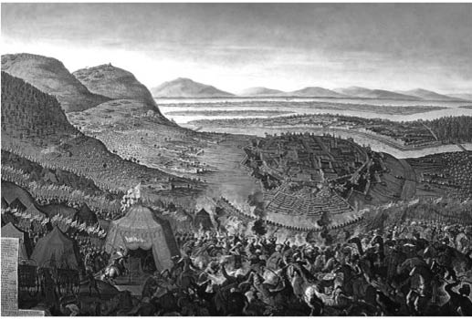

XIII : KÖPRÜLÜ PAŞALARI
1656-1702
Bu aşamaya gelindiğin de yani imparatorluğun çöküşünün çok yakın olduğu bir durum içersinde, başarısızlık birçok dinç ve otoriter sultan sebebiyle vuku bulmuştur. Aynı zaman da resmî yetkililerin yozlaşması, ordunun kanun tanımazlığı ve isyankâr davranışları da imparatorluğu çöküşe sürüklerken bu kargaşanın önünde duran bir adam ortaya çıkardı. Ya da aynı aile soyundan gelen adamlar denilebilir. Bu soydan gelenler uğursuz akımlara bir son vererek, imparatorluğun itibarını ve saygınlığını belli bir süre için tekrardan kurmuştur. İlerleyen 40 yıl boyunca Köprülü ailesi birden fazla olmayan Fetret Devri haricinde veziriazam olamamıştır. Mehmed ve onun soyundan gelenlerin yetersiz kaldığı zamanlarda, sultanın adına imparatorluğu yönetmişlerdir. Bu ailenin ortaya çıkışı Türkiye’de saygınlıkla karşılanır ve bu saygınlıkta başka bir ailede yoktur. İmparatorluğun ilk üç yüz yılında taht hiç aralık vermeden Osmanlı hanedanlığı tarafından doldurulmuştur. Çok uzun yıllar bozulmadan saygınlığını koruyarak devam etmişlerdir ve başka bir aile tarafından da desteklenmemiştir. Osmanlı Türklerinin sosyal ve politik yapısı her zaman demokrasiye dayalı olmuştur. Devlet görevinde bulunanların en üst seviyesindekiyle en alt seviyesindeki her zaman eşit olmuştur. Değerleri ve yetenekleri gözetmeksizin hepsinin önemsiz şahsi olaylarda bile her şeye erişme hakkı vardır. Böyle durumlarda doğumdan gelen hakları ve zenginlikleri kayda alınmazdı. Bu durum içinde tek bir istisnai aile vardı, sultan tarafından en yüksek konumlara getirilen Köprülü ailesiydi.
Köprülü Mehmed Paşa
Bu başarılı ailenin ilk ferdi Mehmed Köprülü Arnavut’tu. Büyükbabası Küçük Asya’da bulunan Amasya’nın Köprülü ilçesine göç etmiştir ve böylece ailesi Köprülü adını almıştır. Aslında çok sıradan bir konumdaydılar, Mehmed kariyerine sultanın sarayında mutfakta çalışarak başladı. Sonra yükselerek baş aşçı oldu, daha sonra kâhya ve şahinci olarak görev yaptı. Böylece haremin de yardımlarıyla Damascus’a (Şam) vali olarak atandı, devamında Tripoli (Trablus) ve Kudüs’te de görev yaptı ve her görev yerinde adaletli, insancıl aynı zamanda güçlü özelliklerini göstermiştir. Yetmiş yaşına geldiğinde paşaların, ulemaların ve diğer görevlilerin karşı gelmesine rağmen, Valide Sultan’ın emriyle Veziriazam olarak görevlendirildi. Hepsi Köprülü’nün bunadığını, ne yazıp ne de okuyabildiğini ve görev için son derece yetersiz olduğunu savundu. Üstadlar daha fazla yanılamazdı herhalde. Köprülü’nün sadece belirli durumlarda göreve geçme hakkı vardı. Henüz on beş yaşında olan imparatorun adına Valide Sultana resmî olarak yeminlerini iletti. Veziriazam olarak verdiği bütün kararlar, sultan tarafından incelenmeden ve araştırılmadan onaylanıyordu. Bu durumda görev dağılımları ve onur ödülleri de kendi elinden geçiyordu. Bulunduğu pozisyonunu şeyhülislamın vermiş olduğu fetva ile duyurarak sağlamlaştırdı.
Şeyhülislam tarafından da onaylandıktan sonra Köprülü en yüksek mercide görevine başladı, sahip olduğu gücü hiç şüphe etmeden kırılmaz bir sertlikle ve son derece ciddiyetle kullandı. Sultan IV. Murad’ı kendine örnek alarak bütün imparatorluktaki her seviyeden günahkâra karşı savaş açtı. Murad’ın yaptığı gibi acımasızlık ve kana susamışlık yapmadı; ancak onları bu konuda endişelendirenleri kasıtlı olarak kötü davranarak zorla kökünü kazıdı. Rüşvet yiyici resmî görevliler, adil davranmayan hâkimler, yeteneksiz askerî görevliler ve isyankâr askerler hiç gecikmeden öldürüldüler. Yeni vezire karşı entrika çevireceği konusunda şüpheli davranışlarda bulunanlar da diğerleriyle aynı kaderi paylaştı. Beş yıllık görev süresince onun emriyle yaklaşık otuz beş bin kişinin canına kıyıldığı söylenmiştir. Bu sayının içinde pek çok isyankâr asker de vardır. İstanbul’un baş idamcısı söz konusu dönem boyunca bazı mevkilerdeki beş bin kişiyi boğduğunu kabul etti. Her türlü günahkâra yapılan cezalar ne kadar kötü olsa da hiç şüphesiz ki, o dönem için gerekliydi. Köprülü’nün kararlı arzusu ve azmi bütün imparatorluğu hızlıca sardı. Adaletsizlik ve yozlaşma azaldı ve durdu. Her türlü düzensizlik bastırıldı. Bütün orduya disiplin getirildi ve itaat etmeleri sağlandı.
Köprülü azimli ve güçlü hareketleriyle Küçük Asya’da ve diğer yerlerde meydana gelen ayaklanmaları ortadan kaldırdı. Osmanlı donanmasını yeniden kurdu böylece Ege Denizi’ndeki donanma üstünlüğünü tekrardan ele geçirdi ve Venediklilerle yapılan savaşta başarı kazandı. Lemnos (Limni) ve Tenedos (Bozcaada) adaları Osmanlı İmparatorluğu hakimiyetine geçti. Girit adasının kuşatması ise büyük bir gayretle yürütüldü.
Köprülü 1661 yılında ölene kadar, beş yıl otoritesi sorgulanmadan Osmanlı İmparatorluğu’nu yönetmiştir. Ölümünün yaklaşmış olması ihtimalini göz önünde bulundurarak sultan ve Valide sultandan onun yerine veziriazam olarak oğlu Ahmed Köprülü’yü geçirmelerini sağladı.
Ölüm döşeğinde yatarken genç sultana şu tavsiyelerde bulunduğu söylenir:
-Hiçbir zaman kadınların nasihatlerini dinleme.
-Kulunun hiçbir zaman çok zengin olmasına izin verme.
-Devletin hazinesini her zaman dolu tut.
-Her zaman ordunun başında at üstünde ol ve orduyu hep ileri götür.
1661 yılında Ahmed Köprülü babası yerine veziriazam olarak geçtiğinde sadece yirmi altı yaşındaydı. Türk tarihçilerine göre Ahmed Köprülü Osmanlı İmparatorluğu’ndaki uzun devlet adamları listesinde en üst sıralarda yer alıyordu; ancak tabii ki Sokullu’nun yerini tutamazdı. Babası tarafından çok iyi bir şekilde eğitildi ve genç yaşında bir bölgenin valisi olarak görev yaptı, böylece devlet işlerinde tecrübe sahibi oldu. Babasının sahip olduğu değişmez arzusunu ve sertliğini aldı; ancak babasının tersine o toplu katliamlar yapmadı. Göreve geldiği ilk senesinden sonra babasının sert tutumunu sergiledi, fakat konumunu güven altına aldıktan sonra daha rahat davranmaya başladı, ondan sonra yönetimi insancıl ve adil oldu. Daha ılımlı davranışlar sergiledi, temkinli ve alçak gönüllü oldu. İhtiyatlı ve laf kalabalığı yapmadan konuştu. 1676 yılında ölene kadar imparatorluğu on beş yıl boyunca yönetti. Bu dönem boyunca Sultan Mehmed’in sonsuz güvenini her zaman arkasında hissetti, Sultan Mehmed yirmi yaşına geldiğinde Köprülü Ahmed Veziriazam olarak atanmıştı. Sırası geldiğinde kamu işleriyle ilgilendi; ancak kendini tamamen avcılığa adadı ve asla sadrazamının kararlarına, yönetimine karışmadı.
Ahmet İslam dininin öğretileri konusunda son derece katıydı. Buna rağmen diğer dinlere karşı da aydın görüşleri ve toleransı vardı. Osmanlı İmparatorluğu altında yaşayan Hıristiyanların kilise inşa etme kısıtlamalarını ortadan kaldırdı. Durumlarını düzeltmek ve üstlerinde ki ağır yükü kaldırıp biraz olsun teselli verebilmek için elinden geleni yaptı. Kendi yönetiminde kötüye kullanma söz konusu bile değildi. Herhangi bir idari karar için ya da atamalar için para almayarak altında çalışanlara iyi bir örnek oldu. Birçok savaşa girmesine rağmen hazineyi her zaman dolu tuttu. İmparatorluğun idaresindeki kabiliyeti ve bilgeliği göze çarpıyordu. Askerî kariyeri ise inişli çıkışlıydı, buna rağmen imparatorluğun topraklarına çok da önemsiz bölgeleri eklemedi. Osmanlı onun ellerinde çok büyük ve tarihî birkaç yenilgi yaşadı, birincisi Avusturya’nın diğeri ise Polonyalıların elinden oldu.
1663 yılında Avusturya ile bir savaş patlak verdi. Veziriazam yüz yirmi bin askeri ve yüz yirmi üç bin silahı barındıran Osmanlı ordusunun başındaydı. Belgrat’tan Tuna nehrini geçti ve kuzeye Nove Zamky’e doğru ilerledi, bu bölge Avusturya’nın elindeki en önemli ve en iyi korunan üç en yerden biriydi. Ancak beş hafta boyunca süren kuşatma sonrasında teslim olmak zorunda kaldı. Bu arada Kırım hanı düzensiz bir atlı ordunun başını çekerek Moravya’yı istila etti. Çok korkunç bir tahribata yol açtı ve seksen bin Hıristiyan’ı köle olarak satmak için esir aldı.
Nove Zamky’i aldıktan sonra Ahmed Köprülü bölgedeki diğer küçük kaleleri de işgal ettikten sonra kışı geçirmek için Belgrat’a karargaha geri döndü. Bir sonraki yıl tekrardan Belgrat’ta ordusunu toplayıp Nove Zamky’e doğru ilerledi. Mur Nehri’ni geçerek Serivar’ı ele geçirdi. 26 Temmuz’da Raab Nehri’nin yakınındaki Macaristan ve Styria (Steiermark) sınırındaki Komorn’a ulaştı. Avusturya-Macaristan ordusu Turenne’nin rakibi olan İtalya doğumlu ünlü General Comte Montecuculi liderliğinde Komorn’a yakın Raab Nehri8 bölgesinde yerini aldı. Sayı olarak Osmanlı ordusundan üstün değildi. İki büyük güç arasındaki Cerestes’teki son savaştan sonra Avusturya generallerini, askerlerini ve silah gücünü büyük bir ölçüde geliştirdi. Osmanlı ordusunun eskiden sahip olduğu disiplin söz konusu değildi ve silahlanma açısından kendilerini geliştirememişlerdi.
8 Güneydoğu Avusturya ve Batı Macaristan’da yer alan Tuna Nehri’nin bir kolu. (çev.)
Bir Ağustos 1664 yılında iki ordu St. Gotthard yakınlarında bir manastır önünde karşılaştı, bu yer daha sonra adını savaşa vererek hatırlandı. Sayı olarak azınlıkta olmalarına rağmen, Lorraine Prensi Charles komutasındaki Avusturya’nın sahip olduğu güçlü süvariler Osmanlı’ya çok ciddi bir yenilgi yaşattı. Prens daha sonra çok ünlü bir general olarak anıldı. Türkler on bin asker kaybetti ve bir çoğu da Raab Nehri’nde boğularak öldürüldü.
Nehrin diğer kıyısından savaşı izleyen otuz bine yakın süvari ise savaşın gidişatını görünce silah başından ayrılıp kaçtı. Daha fazla kayıp vermemek için Veziriazam ordusunun büyük bir bölümünü geri çekti. Avusturya çok kayıp verdi ve zaferlerinin devamını getiremedi. Buna rağmen savaş çok büyük bir önem taşıyordu çünkü ilk defa Osmanlıları savaş meydanında yenilgiye uğratmışlardı. Osmanlı’nın daha önce oluşturduğu saygınlığını bozdu ki, 1526 yılındaki Mohaç zaferinden beri kırılmaz bir itibarı vardı.
Avusturya kazanmasına rağmen veziriazam ile barış masasına oturmak istiyordu ve on gün sonra Türklerin karargahını kurduğu Vascar’da antlaşma imzalandı. Anlaşma çoğunlukla Zitvatorok Antlaşması’nın yenilenmesi gibiydi. Daha çok Osmanlı yararına olan bölümü hariç, antlaşma aynı kaldı. Transilvanya hem Osmanlı hem de Avusturya tarafından boşaltıldı. Prens Apafy bölgenin lideri olarak tanındı ve sultana bağlılığını gösterip vergi vermesi kararlaştırıldı. Nove Zamky ve Serivar Osmanlı’nın elinde kaldı. Yedi ayrı palatinlik işgal edildi, dördü Osmanlının elinde kaldı diğer üçü ise imparatora verilmek üzere yenilendi. Ahmed Köprülü’nün bu antlaşmadan memnun kalmaması gibi bir olasılık yoktu. Meydan muharebesini kaybetmesine rağmen sultanın imparatorluğunu genişletti. Ekim ayının sonuna doğru ordusunu kışı geçirmek için tekrardan Belgrat’a götürdü. İstanbul’a geri döndüğünde ise onu zafer alayı ile karşıladılar.
1667 yılında Ahmed yeni bir seferin hazırlıklarını yapmaya başladı. Girit adasının işgalini bir sonuca bağlamak istiyordu ki, uzun yıllar diğer selefler bu konuda şaşırtıcı bir şekilde başarılı olamamıştı. Çok büyük bir teçhizatla Girit adasına vardı. Girit adası, Venedikliler tarafından çok güçlü bir direnişle savunuldu. Başlarında daha sonra adını Mora adasının fethi ile duyuracak olan Morosini vardı. Ahmed şehri ele geçirmeden önce neredeyse üç yıl kaldı. Şehri işgal ederken mühendislik becerilerini de kullandı. Venedikliler şehrin hakimiyetini sürdürebilmek için çok çaba sarf etti ve adadan gitmeleri için büyük miktarda para önerdi. Ancak Ahmed Köprülü bu teklife karşılık şöyle cevap verdi: “Biz para tüccarı değiliz. Girit’i almak için savaşırız ve hiçbir bedel bizi bundan döndüremez.”
Tabii 1669 yılında Fransız filosunun da onlara katılmasıyla şehir olduğundan daha fazla güçle başarılı bir şekilde savunulmaya başladı. Filo Noailles Dükü’nün kumandasında Fransız seçkinleri ve altı bin askeri kapsıyordu. Daha sonra Papa’nın destekçi filosu ve Malta şövalyeleri de onlara katıldı. Söz konusu birleşmiş filo yetmiş adet gemiden oluşuyordu ve Osmanlı’yı denizden bombalamaya başlamıştı, aynı zamanda diğer taraftan da kuşatma altındaydılar. Müttefikler, Osmanlı ordusunu iki ateş arasında bırakıp, şehri kara ile bağlayan hendek bölgesinden atmayı umut ediyordu. Ancak gemilerden birinin yanlışlıkla patlaması sonucu saldırı başarıyla sonuçlanamadı. Bu olay bütün hattı bozdu. Garnizonun harekâtı da başarısız oldu. Daha sonra Morosini ile Noailles dükü arasında hayati önem taşıyan bir anlaşmazlık ortaya çıktı ve birleşmiş filoların geri çekilmesi ile birlikte şehri kendi haline bıraktılar. Garnizon bu sebeple sadece dört bin silahlı adama kalmıştı. Yoğun baskı uygulayan Osmanlı ordusuna karşı dayanmak imkânsız olmuştu. Teslimiyet şartları ile ilgili bir anlaşmaya varıldı. Sonuç olarak yirmi beş yıl süren bu işgal bir son buldu. Garnizona ve Morosini’ye uygun şartlar sunuldu ve kabul edildi. Bütün ada Osmanlıların oldu, kısa bir süre sonra Venedik Cumhuriyeti ile barış antlaşması yapıldı. Böylece Venedik adanın Osmanlılara geçtiğini tanıdı ve ticaret için ada kıyısından üç küçük liman onlara tahsis edildi.
1672 yılında Ahmed Köprülü üçüncü bir savaşa el attı. Bu sefer Osmanlı, Ukraynalı Kazaklara onlara baskı yapan Polonya karşısında yardım etti. Ayrıca ülkelerini Sobieski’nin işgalinden kurtarması için Osmanlı’dan yardım istedi. Ahmed bu isyancılara yardım etmeye karar verdi. Osmanlı altı bin kişilik ordusunu yolladı ve onlara daha büyük bir orduyla Kırım’dan gelen Tatarlar da katıldı. Söz konusu isyana destek olup müdahale eden Osmanlı’ya karşı Rusya Çar’ı da Polonya kralına destek oldu. Osmanlı’nın buna cevabı son derece onurlu oldu:
Allah’a şükürler olsun ki, Rusya ve Polonya’nın kurduğu birlik, İslam’ın bize verdiği güç ile önemsiz bir hal alıyor. Bizim imparatorluğumuz kökleri sayesinde çok büyümüştür; bütün Hıristiyan kralları bize karşı birlik olsa dahi kılımızı bile incitemez. Allah’ın yardımı ile bu her zaman bu şekilde olacaktır ve Kıyamet Günü’ne kadar dayanacağız.
Ahmed Köprülü Polonya temsilcisine ithaf olarak kendi eliyle kaleme aldığı bu mektupta, kendi eylemlerini savunmuştur. Aynı mektuptan, Türkiye’ye bağlı olan Hıristiyan gruplarının Rusya’dan yardım isteyerek baş kaldırması olayı için de alıntı yapılabilinir.
Von Hammer şu şekilde bir yorum getirir:
Kazaklar kendilerini Polonya’nın hükmü altına sokan özgür insanlardır; ancak ne zaman ki, Polonya’nın baskılarına dayanamayacak hale geldiler her yerden yardım ve destek arayışına geçtiler. Şimdi de Türkiye sancağı altına girdiler. Eğer baskı altında olan ülkenin insanları bu durumdan kurtulmak isterlerse güçlü bir imparatora başvururlardı. Onlara bu şekilde koruma altına almak açıkgözlülük müdür? En büyük, en güçlü imparatorlar düşmanı tarafından baskı altına alınan halkın yardım çağrısına karşılık verdiğinde, akıllı bir adam, barışı bozan bu davranış hangi tarafın suçudur, bilir. Düzensizliği bastırmak için bir anlaşma yapılmak istenirse, bırakılmalı ki yapılsın. Ancak eğer söz konusu farklılıkların çözümü keskin ve kesin hüküm veren “Kılıç”a bırakılırsa, bu anlaşmazlık ancak Tanrı tarafından kesinliğe kavuşturulur. Arkasına her zaman İslam’ın gücünü alan da olduğu gibi yüz yıllardır düşmanlarına karşı zafer kazanır.9
9 Von Hammer, xi, s. 378. (çev.)
1672 seferinde, önemli bir şehir olan Podolya’nın10 başkenti Kaminiec (Kamaniçe) işgal edildi. Bunun ardından Polonya kıralı barış talep etti ve Podolya bölgesi sultanın hükümdarlığı altına girerek Bucaş Antlaşması imzalandı. Ancak daha sonra antlaşma Polonya’nın soyluları ve Sobieski tarafından reddedildi. Yeniden Türklere karşı savaş açtılar. Dört yıl sürdü. 1673 yılında Ahmed Köprülü komutasındaki Osmanlı Ordusu, Sobieski komutasındaki Polonya ordusuna karşı Hotim’de ezici bir yenilgi yaşadı. Ordugah çok şaşırdı. Savaş meydanında Moldavlar ve Eflaklar onu terk etti ardından taraf değiştirerek düşman birliğine katıldı. Türklere karşı çok büyük bir katliam yapıldı. Bir sonraki yıl Türkler tekrardan hücum etti ancak sonuç daha da kötü oldu. Sobieski 1675 yılında Ruslardan yardım alarak Lemberg’de Türklere karşı bir zafer daha kazandı. Ancak bunu takip eden yıl İbrahim Paşa komutasında ki Osmanlı ordusu Polonya’daki durumu tersine çevirdi. Köprülü’nün idaresindeki Türklerin üstün kaynakları durumu kendi lehine olduğunu anlattılar. Polonya’nın kıralı olan Sobieski yenildi. Podolya’nın bütün toprakları Osmanlı’nın oldu.
10 Ukrayna’nın güneybatı ve ortabatısını kapsayan tarihi bir bölgedir. (çev.)
Bu durumda Sobieski anlaşmaya karar verdi. 27 ekim 1676 yılında imzalanan Zorawna Antlaşması Osmanlı’ya daha önce reddedilen Bucaş Antlaşması’ndan çok daha fazla yarar sağladı. Podolya onların oldu.
Ahmed Köprülü bu antlaşmadan birkaç gün sonra, içkinin de etkisiyle, öldü. Avusturya ve Polonya tarafından ezici yenilgiler yaşamış olsa da bu durumu istikrarlı davranışları ve imparatorluğun sınırsız kaynaklarını kullanarak telafi etti. Podolya, Girit Adası ve Macaristan’daki Nove Zamky ve Serinvar’ı alarak toprakları genişletti. Bu olaylar sayesinde imparatorlukta dönemine damga vuranlar listesine girdi. Avrupa’yı kaygılandırması bile yeterliydi. İmparatorluğun idari bölümünü aydınlattı, onun insancıl ve adil davranışları, dini inançlarına bakılmaksızın herkes için eşit hakların olması gerektiği düşüncesi, önemli ya da önemsiz özel işlere ve halka olan değişmez inancı ve gözlemleme kabiliyeti, bilim ve edebiyata olan düşkünlüğü, onu Türk idarecileri arasında ilk sıraya taşıdı.
Bir çok karargâh tarafından sultanın Ahmed Köprülü’nün arkasından kardeşi Mustafa Köprülü’yü getirmesi bekleniyordu. Mustafa Köprülü ağabeyi gibi birçok yerde devlet görevi yapmıştı ve onun üstün özelliklerini de taşıyordu. Ancak Mehmed veziriazam olarak avcılıkta beraber olduğu Kara Mustafa’yı seçti. Fakat Mustafa’nın kana susamış olarak adı çıkmıştı ve ayrıca ahlaksızlık yolunda son derece istekliydi. Bu olay Sultan IV. Mehmed’in soyundan gelene ayrıcalık yaptığı bir durum olarak görülür, yönetim açısından her şeyi vezirine bıraktı ve vezir seçildikten sonra hiçbir şeyi önemsemedi ve sadece avının peşine düştü. Daha kötü bir atama yapılamazdı. Mustafa Köprülü yönetime ancak on üç yıl sonra geçebildi. İmparatorluk yıkım getiren çok tehlikeli yıllar geçirdi.
Yeni veziriazam’ın ilk askeri atılımı 1678 yılında ordusunu Tuna Nehri’nden geçirerek Ukrayna’ya doğru ilerlemek oldu. Gittiği bölgede Ruslarla ve hatta Polonya ile çarpışmaya girdi ve kaybetti. Bu savaş 1681 yılına kadar yatışmadı ve ancak o yıl bir son buldu. Rusya ile barış sağlandı ve Türkler ihtilaf olmaktan vazgeçti.
1682 yılında İmparator Leopold hükümdarlığındaki Macaristan’ın bir bölgesinde, kralın bağnaz ve despot tutumuna karşı ayaklanma meydana geldi. Kara Mustafa bu durumdan dolayı Avusturya’ya saldırmak için doğru bir zaman olduğunu düşündü. Hatta kendi için bir imparatorluk yaratma hırsı olduğu gözden kaçmıyordu. Adrianopol’de (Edirne) çok büyük bir ordu kurdu, 1683 yılının bahar aylarında Tuna Nehri’ni geçti. Düzensiz Tatar birliğini ve karargâhtan onları takip edenleri saymazsak iki yüz yetmiş beş bin asker topladı. İki yüz bin kişilik ordusuyla, Viyana duvarlarına dayanana kadar, yolda kuzeye doğru inerken bazı direnmelere göğüs germek zorunda kaldı. Ancak imparator bu istilacı konuklarını ağırlayamayacak kadar donanımlı değildi. Birliğinde otuz beş bin askerinden başka gücü yoktu. Bunun on bir bini Viyana garnizonu için bölüğü terk etmişti ve elindekilerle savaş meydanında Türklere karşı çıkacak durumda değildi. Bu tehlikeli durumdayken Polonya Kralı Sobieski’den yardım istedi ki, Polonyalılar Türklerle daha yeni barış antlaşması yapmıştı. Ancak bu durum onlar için sorun yaratmadı. Sobieski antlaşmanın hükümlerini yok sayarak İmparatora yardım için elli bin kişilik ordu yolladı. Böyle bir durum için antlaşmada bir madde vardı. Papa tarafından bu durum için bir muafiyet veya vazgeçilme söz konusu değildi.
Ancak Polonya ordusu çok uzaktaydı ve sekiz haftadan önce Viyana’ya varamazdı. Eğer Kara Mustafa, Polonya ordusu gelmeden işgal etseydi, Viyana’nın düşeceğine dair şüpheler vardı.

II. Viyana Kuşatması
İkinci büyük Viyana Kuşatması 15 Temmuz 1683 günü başladı. İmparator ve ailesi Bavyera’ya kaçtı. Viyana’nın savaşa karşı güçlendirmeleri son zamanlarda ihmal edilmişti ve hiç ciddi bir sorunla karşılaşmamıştı. Ancak şehir, daha önceki işgallere dayanan Kont Salm’ı örnek alan kumandan Kont von Stahremberg tarafından kahramanca savunuldu. Yirmi bin kişilik halk da bu savunmada komutana yardım etti. Türklerin borda topları duvarları yıktı geçirdi. Durmaksızın süren hücumlar işe yaradı. Sayı ile üstünlükte olan Osmanlı ordusunun şehri yıkıp yıkacağı söylenirdi ancak Kara Mustafa onların şartlı olarak teslim olacaklarını umuyordu. Böylelikle şehrin sahip olduğu zenginlik sultanı temsilen kendisinin olacaktı. Oysa saldırı ile ele geçirilse kazanılan hazinenin büyük bir kısmı askerlere geçecekti. Bu sebeple son taarruzu erteledi. Bu arada Sobieski Polonya ordusunu getirmeyi başardı ve seksen bin kişilik imparatorluk birliğini yöneten Lorraine Prensi Charles’ın ordusuyla birleştirdi. Tulm bölgesinde Tuna Nehri’nden kayıkları birleştirerek köprü yaptılar ve orduyu bu şekilde karşı kıyıya geçirdiler. Çok zor bir ülke olan Kalemberg’den dolambaçlı yollardan geçerek, Türklere saldırmak için şehrin arkasından dolandılar. Hıristiyan ordusu Tuna Nehri’nden geçerken Kara Mustafa’nın bu atağa karşı bir direniş göstermeyi ihmal etmesi veya Kalemberg’den geçerlerken bir önlem almaması tamamen kendi hatasıydı. 6 Eylül günü Kalemberg’den havaya atılan işaretlerle garnizona Türk ordusunun arkasından geldiklerini ve onları çevreleyen tepelere konuşlandıklarının haberini verdi. Sobieski Türk kampının bütün ihtişamı ile saldırıya hazırlanırken gördüğünde, bu savaşın zafer ile sonuçlanacağından emindi. Veziriazam için küçümseyen sözler söyledi: “Bu adam çok tecrübesizce bir kamp kurmuş. Savaş hakkında hiçbir şey bilmiyor. Onu kesin yeneceğiz.” Ardından kendi askerlerine dönerek şu sözleri sarfetti:
Savaşçılar ve arkadaşlarım; şuradaki ovada düşmanımız bulunmakta, onları yakalarımızın altında çiğnediğimiz Hotin savaşındaki sayılarından daha fazlalar tabii. Onlarla yabancı topraklarda savaşmak zorundayız ancak biz kendi ülkemiz için savaşacağız, Viyana duvarlarının altında Varşova ve Krakov’u savunacağız. Bugün biz sadece bir şehri değil bütün Hıristiyanlığı kurtarıyoruz. Viyana’da Hıristiyanlığın küpeştesini. Bu kutsal bir savaştır. Silahlarımız O’nun tarafından kutsandı, ve O’nun için zafer tacını alacağız… Birazdan kâfirler sizleri tam tepelerine binmiş vaziyette görecek, umutları yok olacak, cesaretleri yerlebir olacak, mezarları olacak olan o vadiden kaçacaklar. Size vereceğim tek bir merim var, beni takip edin, genç olanın onların mahmuzlarını yenme vakti geldi.11
11 Shimmer, Two Sieges of Vienna (İki Ayrı Viyana Kuşatması), s. 137.
Kara Mustafa düşman birliklerini tam arkasındaki tepelere konuşlanmış vaziyette görünce aceleyle savaş hazırlıklarına başladı. Viyana’ya doğru ilerlerken köle olarak satılmak için planlanan ve çoğunluğu kadınlar ve çocuklardan oluşan otuz bin Hıristiyan tutuklunun öldürülmesini emretti. En iyi adamları olan Yeniçerileri şehrin hendek bölgesinde bırakarak ordusunun büyük bir bölümünü Polonya ordusundan gelecek olan saldırıya karşı hazırladı. Sobieski ordusunu yarım daire haline getirdi ve bu sayede Türklere karşı avantaj sağladı.
Başıboş Tatar birliği kaçarak diğer askerler arasında da kafa karışıklığına yol açtı. Bunun ardından Sobieski ordusunu Türklerin tam ortasına yolladı. Osmanlı ordusu parçalandı ve bozguna uğradı. Bu olayları büyük katliamlar izledi, bütün Türk kampı ve ganimetler Hıristiyan ordusunun ellerine düştü. Viyana hendeklerinde savaşan Yeniçerilere hem Polonya garnizonu hem de Viyana garnizonu tarafından iki yandan saldırıldı. Parçalara ayrılarak yok edildiler. Sobieski’nin zaferi tamamlandı ve son buldu. Üç yüz silah ve dokuz bin cephane vagonu ile yirmi beş bin çadır ele geçirildi.
Türk ordusu savaş meydanından atıldı, paniğe tutuldular ve kaçtılar. Sayısı tam olarak bilinmeyen binlerce asker, paşalar ve generallerle beraber öldürüldü. Kara Mustafa kaçan bir guruba katılarak ortadan kayboldu, onu Peygamber’in kutsal sancağı ile birlikte kaçırdılar.
Enkaz halindeki ordu kendini Raab yollarında buldu, oradan da Buda’ya geçtiler. Veziriazam savaşı kaybetmelerinden sorumlu tuttuğu çok değerli ordu mensuplarının ölüm emrini verdi. Daha sonra Belgrad’a geçti ve haklı sebeplerle sultan tarafından ölüm emri verildi. Haramla ele geçirdiği ve çok büyük olan maddî varlığı kamulaştırıldı. Emsali görülmemiş bir şaşaa ile yaşadı. Haremindeki yüz on beş cariyenin her birine bir hizmetli ve yedi yüz harem ağası onları korumak için eşlik ediyordu. Binlerce özel atı ve hizmetçisi vardı.
İkinci Viyana Kuşatması cesur garnizonu ve Sobieski tarafından muhteşem bir zaferle sonuçlandı. 1529 yılında Sultan Süleyman tarafından yapılan ilk kuşatmadan çok daha farklıydı. Süleyman askerî malzeme ve yemek sıkıntısı sebebiyle işgali kaldırmak zorunda kalmıştı. Savaş meydanında başka bir terslikle karşılaşmadı ve başarılı bir şekilde bozulmadan ordusunu geri çekebildi. Mustafa ise şehri kurtarmaya gelen kendinden daha zayıf bir orduyla büyük bir meydan savaşının ortasında kaldı ve yenildi. Ordusu dağıtıldı ve bozguna uğradı. Bir ordu ya da bir general bundan daha büyük bir hezimet yaşamamıştır. Bu olay Osmanlı İmparatorluğu’na ciddi sonuçlar doğurmuştur. Bu olay fetihlerin milleti olan Türklerin bütün namını sildi süpürdü. İki yüz yıldır Orta Avrupa ülkelerine kâbus yaşatan Osmanlı istilası artık ortadan kalkmıştı.
Viyana işgali Osmanlı’nın düşman bölgelerine doğru topraklarını genişletme çabalarının sonuncusu oldu. Bundan sonra genel olarak savunma pozisyonuna geçtiler. Büyük Osmanlı ordusunun Sobieski tarafından yenilmesi, imparatorluğun Macaristan da fethettiği yerleri kaybetmesine yol açtı. Bu sebeple birkaç yıl sonra Tuna Nehri’nden de uzaklaştılar.
Paskenay’da geri çekilerek onların gelmesi için hazırlanan Türkler tarafından pusuya düşürüldüler ve iki bin askeri kaybettiler. Ancak iki gün sonra toparlanıp saldırdılar ve zafer kazanarak çok büyük bir katliam gerçekleştirdiler. Türklerin Tuna Nehri’ni geçmek için kullandıkları kayıklardan oluşan köprü, kaçakların telaşlı ve düzensiz hareketleriyle yıkıldı bu sebeple yedi bin asker boğularak öldü. Daha sonra Hıristiyan ordusu Gran’a baskın yaparak çok önemli bir kaleyi ele geçirdi. Bu kale uzun yıllar Türklerin hâkimiyetindeydi. Böylece kale Avusturya ve Macaristan’ın onlara karşı savunma bölgesi olarak kaldı. Bu olay uzun yıllar süren seferin sonu oldu. Avusturya ve Polonya kışı geçirmek için karargâhlarına çekildi.
Bu arada Viyana’da kazanılan muhteşem zafer diğer güçleri de teşvik etti ve Türklere karşı birleştiler. Papa on dördüncü haçlı seferi için vaazlar verdi. Viyana halkının bütün ihtiyaçları Papa’nın gemisi, Malta Şövalyeleri ve Toskana dükünün de katıldığı büyük bir filo ile sağlandı. Takip eden yıl bu filo Santa Maura adasına saldırdı ve ele geçirdi. Aynı filo Arta Körfezi’nin girişinde bulunan Preveze’yi de aldı. Venedik ordusu da Arnavutluk’u ve Bosna’yı işgal etti.
1684 yılında Lorraine komutasındaki Avusturya ordusu Gran’dan çıkarak Tuna nehrini geçti ve Warzen’de Türkleri yendi ayrıca bir savaşta Buda yakınlarında meydana geldi, orada bulunan kale de ellerine geçti. Ancak birkaç hafta sonra gelen yağmur sezonu ile orduda hastalık baş gösterdi ve işgali iptal edip geri çekildiler. Bu arada başka bir Avusturya ordusu Hırvatistan’da Türkler ile savaştı ve kazandı. Hırvatistan’ın ele geçirilmesiyle beraber yüz on beş yıldır Türklerin hakimiyeti altında olan bölge artık Avusturya- Macaristan yönetimi altına girdi.
Bunu takip eden 1685 yılında Avusturya bir zafer daha kazandı. Yirmi iki yıl boyunca Türklerin hakimiyetinde bulunan ve çok önemli bir kale olan Nove Zamky zayıf ve ümitsiz bir savunmayla kaybedildi. Üç bin kişilik garnizonundan sadece iki yüz asker sağ kaldı. Türk kadınları ve çocukları Avusturya İmparatorluğu’nun topraklarında köle olarak satılmak için tutuklandı. Söz konusu şehrin ele geçirilmesi bütün Avrupa’da bayram sevinciyle karşılandı. 1686 yılında Buda işgali tekrarlandı. İmparatorluk ordusu doksan bin Alman ve Macar ve Hırvat’tan oluşuyordu. Bu ordunun başında Prens Lorraine bulunuyordu. İşgal 18 Temmuz günü başladı. İşgali bastırmaya çalışan Veziriazam Süleyman’ın çabaları yetersiz kaldı. Altı hafta süren işgalin sonucunda Avusturyalılar şehri ele geçirdi. Şehri cesurca savunan Abdi Paşa ve garnizonu can verdi, şehir acımasızca yağmalandı. Yüz kırk beş yıldır Türk hâkimiyetinde olan şehir bu dönem boyunca altı ayrı işgale göğüs germişti. Sonunda Macarların eline geçti.
1687 yılın da bir sonraki sefer Drava’ya saldırı ile açıldı. Veziriazam on beş bin kişilik asker ile altmış altı silah topladı. Avusturyalılarla Mohaç’da karşı karşıya geldi. Mohaç’da bundan yüz altmış yıl önce aynı savaş alanında, Macarlar Türklere ülkelerinin yarısını kaybederek savaşta yenilmişti. Artık Osmanlılar bozguna uğrama ve yenilme dönemine girmişti. Yirmi bin kişi öldürüldü ki, başarılı ordudan sadece bin asker öldü. Aynı yıl Slovenya’da Türklerden temizlendi ve Avusturya’ya verildi. Transilvanya da ise Voyvoda Apafy, Türklerden desteğini çekti.
Bu sırada Venedikliler son üç yılda aynı başarıyı gösterdi. 1686 yılında Morisini komutasındaki ordu Mora Yarımadası’nı işgal etti ve bütün kaleleri ele geçirerek Türkleri bölgeden attı. Ayrıca Dalmaçya’yı da aldı. Pire ve Atina şehirlerine de 1687 yılında saldırarak ele geçirdi. Atina’da bulunan Partheon Tapınağı yıllarca her savaşa ve her tehlikeye dayanarak bütün güzelliği ile ayakta durabiliyordu; ancak artık o da onarılamayacak kadar harap oldu. Saldırılardan korunacağını düşündükleri için Türkler tapınağı cephanelik olarak kullanıyordu. Venediklilerin borda toplarından biri, kasten ya da değil tapınağa isabet etti ve harabeye çevirdi, şu anki durumuna geldi. Yunanistan’ın bütünü artık Venediklilerin elindeydi. Yunan halkı Venediklilere direnen Türklere hiç yardım etmedi. Daha sonra öğrenildi ki, eski ve yeni hükümdarları arasında bir seçim yapmışlardı. Hatta Venedikliler onlara karşı daha zalim ve daha zorba davrandı.
1687 yılında Macaristan’a yapılan seferlerin sonucunda, uzun bir süre yenilgi yaşayan Türk ordusu memnuniyetsiz ve hoşnutsuzdu hatta isyanın eşiğine gelmişti. Başlarındaki asker sultanla buluşarak isteklerini niyaz etti, komutanlarının yani Veziriazam Süleyman’ın baştan alınarak idam edilmesini istedi. Siyavuş Paşa’yı komutanları olarak seçtiler. Tuna Nehri’nden geriye Philippopolis’e (Plovdiv) çekildiler ve oradan da Adrianopol’ye (Edirne) devam ettiler, sultana bir heyet yolladılar ve sorunları hakkında görüşülmesini istediler. Sultan derhal Devlet Şurası’nı topladı ve ordunun istekleri kabul edildi. Siyavuş Paşa, Süleyman Paşa’nın yerine veziriazam olarak atandı. Daha sonra kendisi sultanın emriyle öldürüldü. Orduya sağlanan bu imtiyazla, onların İstanbul’a doğru ilerlemelerini durdurmayı umut ettiler. Ancak ordu tehditkâr tavrını sürdürdü ve başkente doğru ilerlemeye başladı. Daha sonra isteklerine bir yenisini daha eklediler ve Sultan’ın tahtan indirilmesini talep ettiler. Bu konu hakkında İstanbul’daki resmi görevliler de hem fikirdi. Ahmed Köprülü’nün sadrazam olan ve veziriazam yokken onun görevlerini devralan kardeşi Mustafa Köprülü ulema meclisini St. Sophia’da (Ayasofya) topladı. Onlara şu şekilde seslendi:
Padişah kendisini sadece av ile oyalıyor, imparatorluğun her köşesine saldırılarda bulunulurken kendisi bizi bu talihsiz durumdan kurtarabilecek herkesi görevden aldı, sizce devleti idare eden padişahın artık tahtan indirilmesinin zamanı gelmedi mi?
Ulemalar oy birliği ile karara vardı. Sultan Mehmed’in tahtan indirilmesine ve yerine oğlu değil, yasal vârisi olan kardeşi Süleyman’ın geçmesine karar verdi. Hemen ardından Topkapı Saray’ın giderek Harem dairesine tecrit edilen prensi çağırdılar ve kararlarını açıkladılar. Bu açıklamayı Kur’an’dan atıfta bulunarak yaptılar: “Seni ülkenin Halifesi olarak seçiyoruz.”
Bu duruma karşı çıkan olmadı. Hayatını sürekli kardeşi tarafından öldürülme korkusu ve tecrit altında geçiren, Valide Sultan tarafından kurtarılan Süleyman, sultan olarak seçildiğinde aslında hapis hayatı sürüyordu. Otuz dokuz yıl boyunca sultanlık yapmış olan Süleyman, kendini tamamen ava adamıştı ve devlet görevlerini yerine getirmiyordu, o da kardeşinin uzun yıllar geçirdiği haremdeki tecrit konutuna götürüldü. Birkaç yıl sonra öldü ve kimse bu durumdan pişman olmadı.
II. Süleyman
Von Hammer Sultan Mehmed’in oyun ve av arayışı sırasında organize ettiği seferin ayrıntılarını anlatır. Bu sefer belki de sultanın arayışı ve karakteri konusunda bilgi verebilir. Olay Tırnova ve Adrianopol (Edirne) arasında 1683 yılında ordusu Viyana Kuşatması’nda Avusturya ile çarpışırken geçti. Otuz bin köylü sadece oyun için yer açmaya ve ağaçları budamaya geldi. Geçinip gitmeleri için yüz elli bin mark ayrıldı. Bu savaş bir çok hayvan sürücünün hayatına mal oldu, operasyonun yorgunluğuna dayanamadılar. Sadece bu oyun için Belgrat’tan bir çok koruyucu getirttirildi. Yollarda can verenleri gören sultan şöyle dedi. “Hiç şüphesiz ki bu adamlar bana karşı geldiler, Bunun sonucu olarak da cezalarını çektiler.”
Mehmed’in tahtan indirilmesi, kendi görevlerini umursamadığı ya da ihmal etmesinden değildi, kibirli ve yeteneksiz olan Kara Mustafa’nın Viyana’ya yaptığı sefer ve onun vârisi olan İbrahim ve Süleyman gibi iki ahmak veziriazam sebebiyle bu hallere düşmüştü.
1687 yılında tahta geçen Süleyman kırk bir yaşındaydı. Hapis olarak geçirdiği yıllar göz önüne alındığında ondan fazla bir başarı beklenmiyordu; ancak yinede büyük bir azimle kapasitesinin üstünde çalıştı. Ancak isyankâr yeniçeriler de düzeni sağlamak için yetersiz kaldı. Yeniçeriler İstanbul’u isyanlara ve katliamlara boğdular. Vezirin ve diğerlerinin saraylarını yağmaladılar. Veziriazam yaptıkları Siyavuş Paşa’nın sarayına ve haremine saldırdılar. Haremini cesurca savunurken can verdi. Paşa’nın gözdesi ve kız kardeşleri zalimce dövüldükten sonra sokaklara çıplak olarak atıldı. Başkentte durumlar katlanılamaz boyutlara ulaştı ve halk da birlik olup Yeniçerilere karşı otoritelere yardım etmeye başladı. Yeniçeri ağası ve sorumlu görevli ile birlikte diğerleri öldürüldüler, böylelikle tekrardan huzur sağlanmış oldu.
Geçen beş senede yaşadıkları yenilgileri geri almak için 1688 yılının bahar aylarında çok iyi donanıma sahip olan bir ordu Macaristan sınırına yollandı. Ancak Avusturya bu arayı iyi değerlendirdi. Lorraine Prensi Charles, Baden Prensi Louise ve Savoy Prensi Eugéne’in komutasında üç ayrı ordu kurdular, bu üç ayrı generalin ayrı ayrı nadir görülen yetenekleri vardı. Erlau Kalesi’ni işgal edip ele geçirdiler. Bu sayede Belgrat yolları önlerine açıldı. Çok önemli bir şehir olan Erlau Balkanlar’ın siperi ve Macaristan’ın kapısıydı. 1688 yılında yirmi bir gün süren bombardımanın ardından Ağustos ayında garnizonu tarafından teslim edildi. Baden Prensi Louise Bosna’yı işgal ederek büyük bir bölümünü ele geçirdi. Dalmaçya’da ayaklanma başladı ve Türk hâkimiyetinden kurtuldu. Niş Avusturya tarafından kuşatıldı ve Tuna Nehri’ndeki Vidin de onların eline düştü. 1689 yılına geldiğimizde Türklerin elinde sadece Temeşvar ve Varazdin Kaleleri kalmıştı.
Daha doğuya gidildiğinde ise Türkler bu bölgede talihliydi. Kırımlı Tatarlar 1688 yılında Polonya’nın üstüne giderek Sereth’de Polonya ordusunu yendi. Bir sonraki yıl Osmanlılara karşı birleşen güçlere Rusya’da katılarak Kırım’a bir ordu yolladı; ancak ciddi bir yenilgi yaşadılar. Bu iki olay sadece Türkleri bir süreliğine rahatlattı. Diğer her yerde felaketle karşılaştılar. Balkan bölgesi Hunyadi’den sonra ilk defa Avusturya tarafından tehdit edildi. Bosna’nın ve Sırbistan’ın bir bölümü ellerine geçmişti. Yunanistan ve Arnavutluk’un hepsi Morisini komutasındaki Venediklilerin eline geçti, Türk donanması Venedik, Papa, Malta Şövalyeleri ve Toscana dükünün oluşturduğu birleşmiş donanma tarafından Akdeniz’den atıldı. Osmanlı tarafından hiç bir general öne çıkamadı.
Bu şartlar altında 1689 yılının sonunda Osmanlı’nın genel şurası acilen Adrianopol’da (Edirne) toplandı. Sultana Mustafa Köprülü’nün veziriazam olarak seçilmesi önerildi. Ahmet Köprülü öldükten sonra Mustafa Köprülü yerine rüşvetçi ve yeteneksiz Kara Mustafa getirilmişti. On üç yıllık yanlış yönetim ve sefaletten sonra üçüncü Köprülü yönetime getirildi. Köprülü hemen azmini ve yeteneklerini sergiledi. İmparatorluğun ruhanî liderlerine seslendi: “Eğer geçmişte olduğu gibi devam edersek, düşman Kostantinopol için bir sefer düzenleyecektir.”
Mustafa Köprülü hazineyi tekrar toparlayıp tedarik etmek için daha önce halkı soyup soğana çeviren idari görevlilerden ağır iştirakler aldı. Eski askerleri tekrardan işe alarak orduyu büyüttü. Osmanlı donanmasını tekrardan canlandırdı. Tuna Nehri’nde görev almaları için küçük gemilerden bir filo kurdu. İdari görevde bulunan rüşvetçi ve ahlaksız görevlilerin yerine güvenebileceği dürüst adamlar aldı. İmparatorluk için yararlı olacağını düşündüğü Hıristiyan halkı kazanmak için hummalı faaliyetlere girdi. Devlet adamlarına ve paşalara Müslüman olmayan halka karşı baskı uygulamayacaklarına dair emirler verdi. Kelle vergisi haricinde hiç birinden başka vergi alınmayacaktı. Kendisi çok sıkı bir Müslüman olmasına rağmen Hıristiyanlara istedikleri yerlere kilise inşa etmelerine izin verdi. Saçma sapan ticari zorunlulukları ortadan kaldırdı. Kendisi kişilik olarak son derece ağırbaşlı ve sadeydi, ağzı ise çok sıkıydı. Onun için hiçbir suç işlemediği ve yersiz konuşmalar yapmadığı söylenirdi. Ona “Erdemli Köprülü” denirdi. Ancak ülkesi için sadece iki sene veziriazamlık yapabildi, 1691 yılında bir savaşta öldürüldü.
Köprülü veziriazam seçildiği sıralarda Avusturya Tuna Nehri’ni geçerek Makedonya içlerine kadar ilerledi. Köprülü onlara karşı bir ordu yollayarak iki savaşta da yendi. Sonuç olarak Tuna Nehri’nin güneyinde bulunan bütün bölgeler kurtarıldı ve bu bölgede imparatorluğa yapılan baskılar ortadan kaldırıldı. 1690 yılının Ağustos ayında Mustafa Köprülü şahsen ordunun başına geçerek Bulgaristan’a doğru ilerledi. Sofya ve Niş bölgesinden Avusturya’yı kovdu diğer bölgeleri de kuşatarak ele geçirdi. Daha sonra Semedire, Vidin ve Belgrat’a saldırarak buraları da aldı. Tekeli Paşa komutasındaki Osmanlı ordusu Transilvanya’ya girerek Avusturyalıları buradan da kovdu. Köprülü zaferlerle kuşanarak İstanbul’a geri döndü.
II. Ahmed
Aynı zamanda Sultan Süleyman öldü ve yerine kendisi gibi hareme hapsedilen kardeşi II. Ahmed geçirildi. II. Ahmed de orduyu yönetecek ve ülkeyi idare edecek kadar yetenekli değildi. Neyse ki yönetimi veziriazamın ellerine bıraktı. 1691 yılında Köprülü yine ordunun başına geçerek Belgrat’tan yola çıktı ve Tuna Nehri’nin kuzeyine doğru ilerledi. Orada Petrovaradin’i alarak yoluna devam eden Badenli Prens Louis komutasındaki Avusturya ordusuyla karşılaştı. İki ordu Salankamen’de karşılaştı. Küçük filolar Tuna Nehri’nde karşılaştı ve Türkler bu durumda üstünlük kazandı. Ancak kıyıda savaş Türkler için bir hezimetle sonuçlandı. Mustafa Köprülü en tecrübeli generalinin uyarmalarına karşın, gelmek üzere olan birliği beklemeden hücum etti. Türklerin yenildiği korkunç bir savaş meydana geldi. Kaybedilenleri yerine koymak için çabalayan veziriazam meydan savaşının ortasına elinde kılıcıyla girdi, kendi yolunu yarıp Avusturya saflarına erişmeye çalışırken öldürüldü. Türk birliklerinin şevki kırıldı ve geçit verdiler. Bu olayı panik ve hezimet takip etti. Türk kampı ve yüz yirmi silah Avusturya’nın eline geçti. Aynı zamanda Tekeli Paşa da Transilvanya’da Avusturyalılara yenildi ve sürüldü. Bu yıkımdan sonra Osmanlı İmparatorluğu yine bozguna uğradı. Sultan II. Ahmed utancından kalbi kırık bir şekilde öldü ve yerine IV. Mehmed’in yeğeni II. Mustafa geçti.
II. Mustafa
Yeni sultan ülkesini içinde bulunduğu zor durumdan kurtarmak niyetinde değildi ve acil durumlarda hareket edebilecek kabiliyete sahip değildi. Mevcut durumda yaşadıkları felaketin sebebinin ondan önce var olan sultanların sefahat düşkünü ve yeteneksiz olması olduğunu biliyordu. Tahta geçer geçmez Tanzimat Fermanı yayınlayarak yeni düzenlemeler yapacağını ve orduyu şahsen idare edeceğini belirtti. Bu kayda değer fermanda şunları söyledi:
Hükümdarlık yaparken zevkin kölesi olan ve üşenerek pinekleyenler kesinlikle Allah’ın hizmetkârı değildir ve asla ebedi istirahat ve huzur bulamayacaktır. Bu sebeple şehvet düşkünleri, avareler ve miskinler hükümdarlık sarayından kovulmuştur. Babamız Muhteşem Mehmed’in ölümünden sonra ülkeyi yöneten padişahlar zevke duydukları aşk yüzünden hiç özen göstermedi, dinsiz ve ahlaksızlar İslam’ı dört koldan işgal etti. Bizim bölgelerimizi boyunduruk altına aldılar. Mehmed’in iyi insanlarını (kullarını) yağmaladılar. Çocuklar ve eşleriyle birlikte inançlı olanlar köle olarak satıldı. Bunu ben de sizler gibi biliyorum. Bunun için bir karar verdim; Allah’ın yardımıyla inançsızlardan (kâfirlerden) intikam alacağım, onlara cehennemi yaşatacağım. Onlara karşı ben, şahsen kutsal bir savaş başlatacağım. Sen, benim Veziriazamım, diğer vezirlerim, ulema, teğmenlerim ve ordumun Ağaları, benim etrafımda toparlanın ve görkemli Tanzimat Fermanı’mı enine boyun düşünün. Toplanın ve bana haber verin, İmparatorunuza karşı gelenlere karşılık vereyim mi yoksa Adrianopol’de (Edirne) mi kalayım? Bu iki seçenekten hangisinin İmparatorluğa ve Allah’ın kullarına yarar sağlayacağına karar verin.12
12 Von Hammer, xii. p. 372.
Bunun üzerine Dîvân toplanıp üç gün boyunca yeni padişahın Osmanlı ordusunu şahsen yönetmesi ve Avusturya’ya karşı gelmesi konusunda görüştüler. Olumsuz bir karar aldılar. Bu durumun sadece kutsal sultanı riske atacağını değil aynı zaman da paha biçilemez bir gider olacağını düşündüler. Aynı şekilde askerî olaylarda son derece tecrübesiz olan sultana ordunun yükünün ağır geleceğini düşündülerse de bunu dile getiremediler. Sultana şahsen seferlere çıkarak riske atılmaması gerektiğini onun yerine veziriazamını yollamasını önerdiler. Buna karşılık sultan kısa ve öz konuştu. “İlerlemekte ısrar ediyorum”. Bu kararın ardında Mustafa, tecrübesiz bir asker olmasına rağmen başarılı bir şekilde orduyu Belgrat’tan Temeşvar’a kadar götürdü. 1696 yılında Temeşvar’a doğru ilerlerken yolda küçük kaleleri de ele geçirdi. Avusturya ordusu ciddi bir yenilgi yaşadı ve Temeşvar ele geçirildi. İstanbul’a geri döndü ve orada coşkuyla karşılandı.
Temeşvar
1697 yılında Mustafa tekrardan hiçbir askeri plan yapmadan Belgrat’tan Macaristan’a doğru yola çıktı. Bir çok kez toplanan savaş heyeti ve bir süre süren kararsızlıktan sonra kuzeye doğru Tisza Nehri’ne doğru ilerlemeye karar verildi. Avusturya ordusu Savoy Prensi Eugéne’nin komutasındaydı, Eugéne ilk olarak Viyana Kuşatması’nda karşımıza çıkmıştı. Zamanın en hünerli generallerindendi. İki ordu Tisza Nehri ile Tuna Nehri’nin kesiştiği noktadan on kilometre uzaklıktaki Zenta’da karşılaştı. Bu bölgede Türkler nehrin üstüne bir köprü inşa etti. Sultan ile onun süvari birliği ve topçu sınıfının büyük bir kısmı çoktan nehri geçmişti. Piyade birliği ise hâlâ nehrin diğer tarafındaydı. Prens Eugéne apansız saldırısıyla, Türk ordusunu cürmümeşhut halinde yakaladı. Nehir tarafından ikiye bölünmüşlerdi. Ordusunu hilal şekline getirerek henüz nehrin diğer kıyısına geçemeyen piyade birliğine saldırdı. Osmanlı saflarında büyük bir karışıklığa yol açtı, başlarında bulunan komutanlar düzensizliği toparlayamadı. Yeniçerilerin büyük bir bölümü savaş meydanında isyan çıkardı ve subayları kesip biçtiler. Ardından Osmanlı’nın kahredici yenilgisi meydana geldi. Yirmi altı bin Türk savaş alanında katledildi ve on bini ise nehri geçmeye çalışırken boğuldu.
Veziriazam ve onunla beraber dört vezir daha, birçok paşa ile otuz Yeniçeri ağası öldürüldü. Dört yüz yirmi normal asker ise esir oldu. Nehrin diğer tarafından savaşa güvenlik içinde şahit olan sultan, süvarileriyle birlikte Temeşvar’a kaçabildi. Daha sonra Belgrat’a ve oradan da İstanbul’a döndü. Bu olaylar onun askerî hevesini tatmin etti ve bir daha asla savaş meydanına ordusunun başında çıkmadı. Avusturyalıların eline çok büyük bir ganimet geçti. Bütün Türk silahlarına el koyuldu. Zenta’da yaşadıkları yenilgiden geriye kalan askeri birlik Belgrat’a doğru yol aldı ve daha sonra Adrianopol’ye (Edirne) geri döndüler. Bu arada Prens Eugéne Tuna Nehri’ni geçerek Bosna’ya vardı ve bölgenin büyük bir bölümünü hâkimiyetine geçirdi. On dört yıldır süren başarılı seferleri ve son aldıkları savaşla beraber Avusturya, Osmanlı İmparatorluğu ordusuna geri dönülmez bir çöküş yaşattı.
Savaştan altı gün sonra tehlikede bulunan sultan, tekrardan Köprülü ailesinin yardımına başvurdu. Zenta’da öldürülen Veziriazamın yerine Muhammed’in en büyük oğlu ve Ahmed’in kuzeni olan Hüseyin, Köprülü’yü geçirdi. Viyana Kuşatması’na kadar kendini zevki sefaya adamıştı, Türklerin şiddetli yenilgisinden sonra devlet yönetimindeki birçok görevli onu görmezden gelmişti. Ailesinde veziriazam görevine getirilen dördüncü kişiydi ve kendisini bu yükü kaldıracak kadar güçlü görüyordu.
1697-8 yılı kış aylarında barış için büyük çaba sarf edildi. İngiltere Büyükelçisi Lord Paget, Uti Possidetis İlkesi’ne13 başvurarak Büyük Britanya ve Hollanda arasında arabuluculuk yapmayı önerdi. Avusturya, Venedik ve Polonya’nın Türklerden aldıkları yerleri ellerinde tutacaklardı. Bu konuyu düşünmek üzere Veziriazam Hüseyin Köprülü Devlet Şurası’nı topladı. St. Gotthard Muharebesi ve diğer savaşlarda şahsen bulunmuştu ve Avusturya ordusunun üstünlüğünün farkındaydı. Viyana Kuşatması ile beraber dokuz büyük savaşta Osmanlı ordusu onlara karşı yenik düşmüştü. Ayrıca işgallerle dokuz küçük kaleyi de kaybetmişlerdi. Eğer tekrardan bir savaş çıkacak olursa sonucun farklı olmayacağını düşünüyordu. Onun verdiği örneklerin sonucunda Büyük Britanya ve Hollanda’nın sunduğu arabuluculuk kabul edildi. Rusya hariç diğer devletler bu durumu onayladı. Rus Çarı I. Petro tek başına itiraz ederek diğer devletleri de uyardı. Hollanda ve Büyük Britanya’ya güvenmemelerini onların sadece kendi ticari ilişkilerini düşündüklerini söyledi. Devletleri caydırma çabalarına rağmen bütün devletler birlik olup hatta Rusya’yı da temsilen bir Barış Kongresi düzenlemeye karar verildi. Tuna Nehri’nde Petrovaradin’den çok uzak olmayan Karlofça’da yapılmaya karar verildi. Yetmiş iki gün süren tartışmalar ve anlaşmaya varma sonrasında Lord Paget tarafından önerilen dağılım ve barış sağlandı. Avusturya sonunda, Transilvanya, Slavonya ve Macaristan’ın hepsi ile Mureş Nehri’nin kuzeyi ve Tisza Nehri’nin batısına kadar almayı kabul etti. Bu durumda Osmanlı’ya sadece Macaristan’da daha önce sahip oldukları bölgenin üçte biri kadar yer kaldı. Aynı zamanda İmparator Macaristan ve Transilvanya hususuyla ilgili vergi ödeme yükümlülüğünden de kurtuldu. Venedik Cumhuriyeti ise Mora adasını ve Arnavutluk’u elinde tutacaktı ancak Korint Kıstağı’nı vermek zorunda kaldı, bu durum Uti Possidetis İlkesi’ndeki tek ayrılış oldu.
13 “as you possess” teriminin Latincesidir. Savaş sonunda başka bir antlaşma olmadığı takdirde işgal edilen toprakların elde tutulmasını öngören prensip.
Ayrıca Venedik Zante Adası için Osmanlı Hükümdarlığı’na vergi ödemekten muaf tutuldu. Polonya Podolya’yı elinde tutacak. Rusya ise Azoff bölgesini aldı hatta hali hazırda onun hükümdarlığı altında olan Azoff Denizi’nin kuzey bölümleri de ona kaldı. Çar I. Petro bu durumdan hoşnut kalmadı ve bu şartlar altında bir anlaşmaya girmeyeceğini belitti. Sadece iki yıl ateş kes yapabileceğini söyledi. Diğer devletler yirmi beş yıl sürecek olan bu anlaşmaya katıldı.
Karlofça Barış Antlaşması’nın Avrupa ülkeleri arasındaki ilişki bazından büyük önemi vardır. Bu antlaşmayla birlikte anlaşıldı ki, Osmanlı ile savaşa girsin yada girmesin bütün Avrupa devletleri imparatorluğun şartları ile ilgileniyordu. Avrupa’daki güçler söz konusu olduğunda bu antlaşmayla birlikte güçler arası eşitlik sağlandı ve sonunda Osmanlı’nın fetih yılları ile sahip olduğu gösteriş son bulmuş oldu. Böylece Orta Avrupa’nın Türkler tarafından istila edilme korkusu ortadan kalkmış oldu. Daha sonra yapılan barış antlaşmalar, Pasarofça, Kaynarca, Edirne ve Berlin gibi; bu denli küçük düşürücü olmadı. Yine de Avrupa’nın Hıristiyan güçleri için birer zaferdi. Osmanlı ordusunun uzun süre zafer kazanamaması ve imparatorluğun yorgun düşmesiyle Hüseyin Köprülü aslında zekice bir hareket yapıp antlaşmayı imzaladı. Kendisinin ve aile üyelerinin önerileri kabul görmüş olsaydı ve imparatorluğun altında yaşayan Hıristiyan halka adilce davranılmış olsaydı, bu denli bir aşağılanma önlenebilirdi ve Osmanlı İmparatorluğu bozulmadan devam edebilirdi.
Hüseyin Köprülü Karlofça Antlaşması’ndan sonra üç sene daha veziriazam olarak görevine devam etti. Bu yıllarda davranışlarıyla Ahmed Köprülü gibi büyük ve değerli özelliklere sahip olduğunu kanıtladı. Çok kültürlü ve vatansever bir adamdı. Ülkede baş gösteren ahlaksız davranışlara karşı akıllı ve faydalı reformlarla savaştı. Yeniçerilerin isyancı davranışlarını kontrol altına almayı amaçladı. Acınacak halde olan kafir kesimi için elinden geleni yaptı ancak reformlara gericiler tarafından şiddetle karşı çıkıldı. Yaşadığı stres dolu günler sebebiyle kalbi kırıldı ve görevinden istifa etmeye mecbur kaldı. Birkaç hafta sonra 1702 yılında öldü. Reformları da hayatta kalamadı. Köprülü’nün yerine Daltaban Paşa geçti, ancak paşa Köprülü’den çok farklıydı, vahşi bir Sırplıydı. Ne okuması vardı ne de yazması ve zalimliği ile ün yapmıştı ki bulunduğu pozisyon gereği kendini haklı çıkarmayı başarmıştı.
1710 yılında yine Köprülü ailesinden biri veziriazam oldu. Numan Köprülü ailesinin birçok özelliğini taşımasına rağmen görevinde pek de eşit davranmadı. Birçok farklı girişimde bulunmaya kalkıştı. Devletin her işine müdahale etti ve bu sayede altında çalışanların düşmanlığını kazandı. Devlet işleri karmakarışık oldu, bunun sonucunda birkaç ay sonra görevden alındı. İleriki yıllarda Köprülü ailesinde beş ayrı kişi daha general oldu ve bölge valiliklerine getirildi. Herhangi bir devletin tarihi olaylarında bir ailenin bu denli seçkin adam çıkarabilmesi biraz şüpheyle karşılanacak bir olay, hatta getirildikleri göreve sıkı sıkıya bağlanıp kendi iyilikleri için değil de sadece devlet için çalışması da çok görülmüş bir olay değildi. Bu olayın Türk tarihinde eşi benzeri yoktur, aynı aileden gelen iki kişinin bile ayrı fikirlerde olmaması bile zor bulunan bir durumdu.